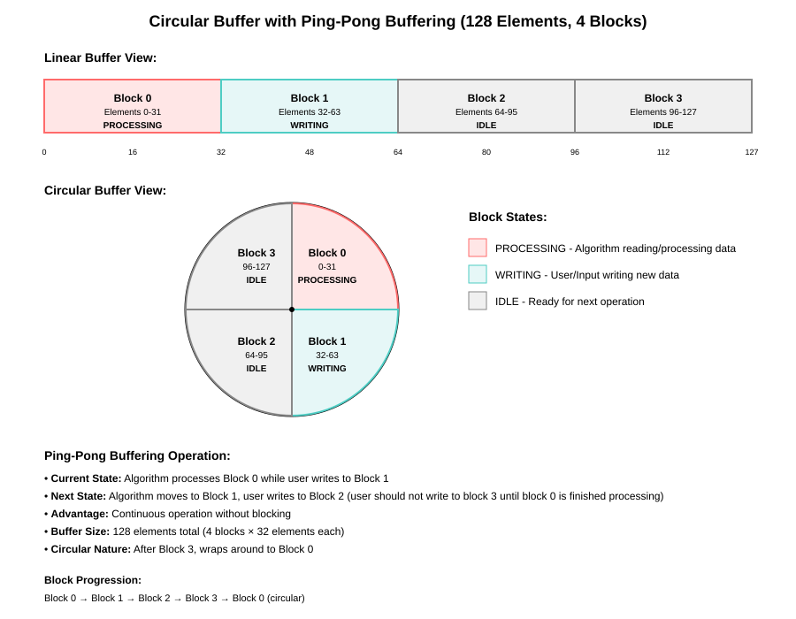
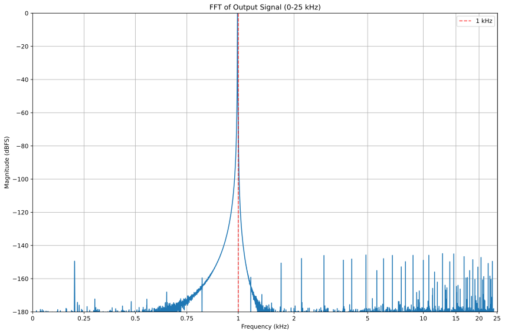

AUDIOLIB_asrc¶
- group AUDIOLIB_asrc
Asynchronous Sample Rate Conversion (ASRC)
The ASRC kernel performs asynchronous sample rate conversion of discrete input signals, converting audio data from one sample rate to another. It is designed for high-performance, multi-channel audio processing and supports both interleaved and non-interleaved data formats.
Key Features:
Converts input audio streams from an input sample rate to a different output sample rate.
Supports both channel interleaved and non-interleaved input data formats.
Handles multiple audio channels in a single kernel call.
Supports ping-pong buffer management.
Provides utility functions to calculate buffer sizes for output, intermediate and remaining data.
Ensures output sample count is a multiple of a configurable frame modulo factor for integrating with different system applications.
Algorithm Overview:
Initialization: The kernel is initialized with user-specified parameters such as input/output sample rates, number of channels, data format, and buffer sizes using AUDIOLIB_asrc_InitArgs.
Buffer Preparation: The application allocates output, intermediate and remaining sample buffers based on the calculated sizes using utility functions like AUDIOLIB_asrc_getOutBufferLength, AUDIOLIB_asrc_getNonInterleavedDataBufSize, and AUDIOLIB_asrc_getFilterRembufSize.
Configuration: The kernel is validated and configured using AUDIOLIB_asrc_init_checkParams and AUDIOLIB_asrc_init APIs.
Ratio Setting / Reset: The ASRC ratio (output/input sample rate) is set or the filter state is reset using AUDIOLIB_asrc_set. After each AUDIOLIB_asrc_init call, the ASRC state must be reset first using AUDIOLIB_asrc_set before executing the conversion.
Execution: The main processing is performed by AUDIOLIB_asrc_exec, which reads input samples, applies the sample rate conversion algorithm (using polyphase filtering and interpolation), and writes the converted output samples.
Output: The number of output samples generated is provided in AUDIOLIB_asrc_ExecOutArgs. If the input data format is channel interleaved, the output samples will also be in interleaved format. If the input data format is non-interleaved, the output will be in non-interleaved format.
Performance Considerations:
Buffers should be allocated in L2 memory and aligned for optimal performance on C7x targets.
The kernel is optimized for batch processing of multiple channels and large blocks of audio data on the C7x DSP.
Usage Flow:
Allocate memory to all required buffers.
Validate and Configure/Initialize parameters using AUDIOLIB_asrc_init_checkParams and AUDIOLIB_asrc_init.
Reset ASRC state using AUDIOLIB_asrc_set’s AUDIOLIB_ASRC_MODE_RESET mode.
Set asrcRatio using AUDIOLIB_asrc_set’s AUDIOLIB_ASRC_MODE_SET mode (must run at least once).
For each input block:
Set asrcRatio (optional, using AUDIOLIB_asrc_set’s AUDIOLIB_ASRC_MODE_SET mode).
Execute conversion for each input block AUDIOLIB_asrc_exec.
Retrieve output samples.
Input/Output Data Formats:
Interleaved Format:
Input: Channels are stored in a single array with samples for each channel interleaved.
ASRC algorithm is optimized to use non interleaved data. The input data is converted to non interleaved format internally before processing using DSPLIB_matTrans kernel. User has to provide the handle to this kernel in
AUDIOLIB_asrc_InitArgs::matTransHandleand allocate all necessary buffers including the intermediate circular buffer. ASRC uses a novel circular ping-pong buffer technique; the intermediate circular buffer is half the size of the non-interleaved mode circular buffer because the user is already managing ping pong buffering via pIn buffer.The output data is converted back to interleaved format once the processing is done.
The user has to manage the ping pong buffering when the input data is set to the channel interleaved format.
Ex: Maintain two pIn buffers. Once the execution is started on the first pIn buffer, the user can start filling the second pIn buffer with new data.
Once the execution is done on the first pIn buffer, submit the second pIn buffer to the execution function and the user can start filling the first pIn buffer with new data while the second pIn buffer is being processed.
The format of channel interleaved data is shown in the diagram below:

Non-Interleaved Format:
Input: Each channel has its samples first before the next channel’s samples.
Output: Same as input, with converted sample rates.
The format of non interleaved data is shown in the diagram below:

In C7x non-interleaved mode, the following additional constraints apply:
The user must write to the correct block of the circular buffer for each new block of data, cycling back to the first block once the last block is filled.
The width of the circular buffer is determined by the maximum sample count per block.
The maximum sample count per block must be a power of 2 to support circular buffering.
If the maximum sample count per block is >= 64, the circular buffer will have 4 blocks of the maximum sample count.
If the maximum sample count per block is < 64, the circular buffer width should be 128 samples.
The circular buffer will have as many rows as the number of channels.
The circular buffer is in L2 memory and MUST be \((\text{totalWidthOfCircularBuffer} \times \text{sizeof(float)})\)-byte aligned.
Ping pong buffering is supported through this circular buffer (no need to allocate 2 buffers).
Example: circular buffer of 128 samples total, each block 32 samples.
Note:

Each block can have multiple rows depending on the number of channels.
Output sample buffer is not a circular buffer; it is a single contiguous block. The output data format matches the input data format.
Other Considerations:
Load the correct filter coefficients into pFiltCoeffs buffer based on the input/output sample rates (see AUDIOLIB_asrc_d.c).
Filter coefficient header files are in the $AUDIOLIB/src/AUDIOLIB_asrc/filt_coeffs directory.
In standard operation, initially set asrcRatio using AUDIOLIB_asrc_set based on the static input and output sample rates.
Real sample clock frequencies can vary; it is the user’s responsibility to frequently calculate the correct asrcRatio = fsout / fsin value using a separate calcRatio driver with hardware counters. If this is not done, system-level buffers will eventually overflow.
There are limitations on the asrcRatio that can be set to prevent internal buffer overflow.
This is determined by: \(\text{maxAsrcRatio} = \text{InitialSetSampleRateRatio} + \frac{(\text{AUDIOLIB\_ASRC\_MAX\_MODULO\_FACTOR} - \text{userSetFrameModuloFactor})}{maxSampleCountPerBlock}\)
FFT Plot:
Follwing plot shows the FFT for 1 kHz Sine Input that was sample rate converted from 44.1KHz to 48KHz.
Plot is based on output data collected by running ASRC kernel on a C7504 processor.
Note that noise compomnents are lower than -140 dB which is what our filters are designed for.

Defines¶
-
AUDIOLIB_ASRC_DEFAULT_INPUT_FRAMELENGTH¶
ASRC’s input frame length. Only allowed values are multiples of 2 starting from 4 (4, 8, 16, 32, 64, 128, 256, etc). Note that ASRC uses quadruple buffers for ping ponging so for larger block sizes the input buffer size will be 4 times the standard buffer size.
-
AUDIOLIB_ASRC_MAX_NUM_CHANNELS¶
Max number of channels supported by the ASRC.
-
AUDIOLIB_ASRC_MODE_SET¶
ASRC set function modes.
Mode: Set the ASRC ratio.
-
AUDIOLIB_ASRC_MODE_RESET¶
Mode: Reset the ASRC state.
Enums¶
Functions¶
-
int32_t AUDIOLIB_asrc_getHandleSize(AUDIOLIB_asrc_InitArgs *pKerInitArgs)¶
Utility function to calculate the size of internal handle.
Remark
Application is expected to allocate buffer of the requested size and provide it as input to other functions requiring it.
- Parameters:¶
- AUDIOLIB_asrc_InitArgs *pKerInitArgs¶
[in] : Pointer to structure holding init parameters
- Returns:¶
Size of the buffer in bytes
-
int32_t AUDIOLIB_asrc_getNonInterleavedDataBufSize(uint8_t numChannels, uint32_t sampleCount, uint32_t sampleDataType, uint32_t dataFormat)¶
Utility function to calculate the size of Non Interleaved Data circular buffer. This buffer is only required when the input data to ASRC is interleaved.
Remark
Application is expected to allocate buffers of the requested size for the Non Interleaved Data circular buffer before making the AUDIOLIB_asrc_exec function call if the input data format is interleaved.
-
int32_t AUDIOLIB_asrc_getFilterCoeffSize(uint32_t sampleDataType)¶
Utility function to calculate the ssize of the polyphase filter coefficients.
Remark
Application is expected to allocate buffers of the requested size for the filter coefficients buffer before making the AUDIOLIB_asrc_exec function call.
-
int32_t AUDIOLIB_asrc_getFilterRembufSize(uint8_t numChannels, uint32_t sampleDataType, uint32_t frameModuloFactor)¶
Utility function to calculate the size of filter remaining buffer.
Remark
Application is expected to allocate buffers of the requested size for the filter remaining buffer before making the AUDIOLIB_asrc_exec function call.
-
int32_t AUDIOLIB_asrc_getOutBufferLength(sample_rate_t inputSampleRate, sample_rate_t outputSampleRate, uint32_t sampleCount)¶
Utility function to calculate the dimention x of output buffer.
Remark
Application is expected to allocate buffers of the requested size for the output buffer before making the AUDIOLIB_asrc_exec function call.
- Parameters:¶
- sample_rate_t inputSampleRate¶
[in] : The input sample rate.
- sample_rate_t outputSampleRate¶
[in] : The output sample rate.
- uint32_t sampleCount¶
[in] : The number of input samples.
- Returns:¶
Returns the length of the output buffer in element count.
-
uint32_t AUDIOLIB_asrc_getFilterLength(void)¶
Retrieves the filter length used in audio sample rate conversion.
This function returns the predefined filter length value used in the audio sample rate conversion process.
- Returns:¶
uint32_t The filter length, which is set to 64.
-
AUDIOLIB_STATUS AUDIOLIB_asrc_init(AUDIOLIB_kernelHandle handle, AUDIOLIB_bufParams2D_t *bufParamsIn, AUDIOLIB_bufParams2D_t *bufParamsOut, AUDIOLIB_asrc_InitArgs *pKerInitArgs)¶
This function should be called before the AUDIOLIB_asrc_exec function is called. This function takes care of any one-time operations such as setting up the configuration of required hardware resources such as the MMA accelerator and the streaming engine. The results of these operations are stored in the handle.
Remark
Application is expected to provide a valid handle.
- Parameters:¶
- AUDIOLIB_kernelHandle handle¶
[in] : Active handle to the kernel
- AUDIOLIB_bufParams2D_t *bufParamsIn¶
[in] : Pointer to the structure containing dimensional information of input buffer
- AUDIOLIB_bufParams2D_t *bufParamsOut¶
[out] : Pointer to the structure containing dimensional information of ouput buffer
- AUDIOLIB_asrc_InitArgs *pKerInitArgs¶
[in] : Pointer to the structure holding init parameters
- Returns:¶
Status value indicating success or failure. Refer to AUDIOLIB_STATUS.
-
AUDIOLIB_STATUS AUDIOLIB_asrc_init_checkParams(AUDIOLIB_kernelHandle handle, const AUDIOLIB_bufParams2D_t *bufParamsIn, const AUDIOLIB_bufParams2D_t *bufParamsOut, const AUDIOLIB_asrc_InitArgs *pKerInitArgs)¶
This function checks the validity of the parameters passed to AUDIOLIB_asrc_init function. This function is called with the same parameters as the AUDIOLIB_asrc_init, and this function must be called before the AUDIOLIB_asrc_init is called.
Remark
None
- Parameters:¶
- AUDIOLIB_kernelHandle handle¶
[in] : Active handle to the kernel
- const AUDIOLIB_bufParams2D_t *bufParamsIn¶
[in] : Pointer to the structure containing dimensional information of input buffer
- const AUDIOLIB_bufParams2D_t *bufParamsOut¶
[out] : Pointer to the structure containing dimensional information of ouput buffer
- const AUDIOLIB_asrc_InitArgs *pKerInitArgs¶
[in] : Pointer to the structure holding init parameters
- Returns:¶
Status value indicating success or failure. Refer to AUDIOLIB_STATUS.
-
AUDIOLIB_STATUS AUDIOLIB_asrc_set(AUDIOLIB_kernelHandle handle, uint8_t mode, double asrcRatio, void *pNonInterleavedData, void *pIn)¶
This function does 2 operations based on mode parameter.
mode = AUDIOLIB_ASRC_MODE_RESET resets the filter state
mode = AUDIOLIB_ASRC_MODE_SET sets the asrcRatio
Please refer to details under AUDIOLIB_asrc
Remark
Before calling this function, application is expected to call AUDIOLIB_asrc_init function. This ensures resource configuration and error checks are done only once for several invocations of this function. This function MUST be called ONCE with mode = AUDIOLIB_ASRC_MODE_RESET before calling AUDIOLIB_asrc_exec
- Assumptions:
The kernel handle must be active and valid
pNonInterleavedData, pIn and pFiltCoeffs must not be NULL when mode is AUDIOLIB_ASRC_MODE_RESET.
The buffer pointers are assumed to be aligned to the size of circular buffer in bytes. To be precise,
When the input data format is
AUDIOLIB_DATA_FORMAT_INTERLEAVED, pIn must be aligned to the size of 64-bytes and the pNonInterleavedData must be aligned to the size of circular buffer in bytes.When the input data format is
AUDIOLIB_DATA_FORMAT_NON_INTERLEAVED, pIn must be aligned to the size of circular buffer in bytes.If this alignment is not set properly streming engine circular buffer will not work and the algorithm will break!!!
pFiltCoeffs must be aligned to the size of 64-bytes.
- Performance Considerations:
For best performance,
The pNonInterleavedData, pIn and pFiltCoeffs buffers are expected to be in L2 memory
- Parameters:¶
- AUDIOLIB_kernelHandle handle¶
[in] : Active handle to the kernel
- uint8_t mode¶
[in] : Operation mode
- double asrcRatio¶
[in] : Outputs to input sample rate ratio (used when mode is AUDIOLIB_ASRC_MODE_SET)
- void *pNonInterleavedData¶
[in] : Pointer to buffer holding the intermediate non interleaved data.
- void *pIn¶
[in] : Pointer to buffer holding the input data.
- Returns:¶
Status value indicating success or failure. Refer to AUDIOLIB_STATUS.
-
AUDIOLIB_STATUS AUDIOLIB_asrc_exec(AUDIOLIB_kernelHandle handle, void *pIn, void *pNonInterleavedData, void *pFiltCoeffs, void *pFilterRembuf, void *pOut, const AUDIOLIB_asrc_ExecInArgs *pKerInArgs, AUDIOLIB_asrc_ExecOutArgs *pKerOutArgs)¶
This function is the main kernel compute function.
Please refer to details under AUDIOLIB_asrc
Remark
Before calling this function, application is expected to call AUDIOLIB_asrc_init, AUDIOLIB_asrc_set in AUDIOLIB_ASRC_MODE_RESET mode and AUDIOLIB_asrc_exec_checkParams functions. This ensures resource configuration and error checks are done only once for several invocations of this function.
- Assumptions:
Memory pointed by pIn, pNonInterleavedData, pFiltCoeffs, pFilterRembuf, pOut shall NOT be shared. Library code is using the restrict keyword to optimize the kernel. So any of these pointer should not point to the same memory region at any time.
When the input data format is
AUDIOLIB_DATA_FORMAT_INTERLEAVED, pIn must be aligned to the size of 64-bytes and the pNonInterleavedData must be aligned to the size of circular buffer in bytes.When the input data format is
AUDIOLIB_DATA_FORMAT_NON_INTERLEAVED, pIn must be aligned to the size of circular buffer in bytes and pNonInterleavedData is unsed.If this alignment is not set properly streming engine circular buffer will not work and the algorithm will break!!!
- Performance Considerations:
For best performance,
The input, output and intermediate data buffers are expected to be in L2 memory
The buffer pointers are assumed to be 64-byte aligned unless it’s a circular buffer which needs and alignment equal to the size of the circular buffer in bytes.
- Parameters:¶
- AUDIOLIB_kernelHandle handle¶
[in] : Active handle to the kernel
- void *pIn¶
[in] : Pointer to buffer holding the input data
- void *pNonInterleavedData¶
[in] : Pointer to buffer holding the intermediate non interleaved data
- void *pFiltCoeffs¶
[in] : Pointer to buffer holding polyphase filter cefficients.
- void *pFilterRembuf¶
[in] : Pointer to buffer holding the filter remaining buffer
- void *pOut¶
[out] : Pointer to buffer holding the output data
- const AUDIOLIB_asrc_ExecInArgs *pKerInArgs¶
[in] : Pointer to structure holding input Arguments
- AUDIOLIB_asrc_ExecOutArgs *pKerOutArgs¶
[out] : Pointer to structure holding output Arguments
- Returns:¶
Status value indicating success or failure. Refer to AUDIOLIB_STATUS.
-
AUDIOLIB_STATUS AUDIOLIB_asrc_exec_checkParams(AUDIOLIB_kernelHandle handle, const void *pIn, const void *pNonInterleavedData, const void *pFiltCoeffs, const void *pFilterRembuf, const void *pOut, const AUDIOLIB_asrc_ExecInArgs *pKerInArgs, const AUDIOLIB_asrc_ExecOutArgs *pKerOutArgs)¶
This function checks the validity of the parameters passed to AUDIOLIB_asrc_exec function. This function is called with the same parameters as the AUDIOLIB_asrc_exec, and this function must be called before the AUDIOLIB_asrc_exec is called.
Remark
None
- Parameters:¶
- AUDIOLIB_kernelHandle handle¶
[in] : Active handle to the kernel
- const void *pIn¶
[in] : Pointer to buffer holding the input data
- const void *pNonInterleavedData¶
[in] : Pointer to buffer holding the intermediate non interleaved data
- const void *pFiltCoeffs¶
[in] : Pointer to buffer holding polyphase filter cefficients.
- const void *pFilterRembuf¶
[in] : Pointer to buffer holding the filter remaining buffer
- const void *pOut¶
[out] : Pointer to buffer holding the output matrix
- const AUDIOLIB_asrc_ExecInArgs *pKerInArgs¶
[in] : Pointer to structure holding input Arguments
- const AUDIOLIB_asrc_ExecOutArgs *pKerOutArgs¶
[out] : Pointer to structure holding output Arguments
- Returns:¶
Status value indicating success or failure. Refer to AUDIOLIB_STATUS.
-
void AUDIOLIB_asrc_perfEst(AUDIOLIB_kernelHandle handle, const AUDIOLIB_bufParams2D_t *bufParamsIn, const AUDIOLIB_bufParams2D_t *bufParamsOut, uint64_t *archCycles, uint64_t *estCycles)¶
This is a utility function that gives an estimate of the cycles consumed for the kernel execution.
Remark
None
- Parameters:¶
- AUDIOLIB_kernelHandle handle¶
[in] : Active handle to the kernel
- const AUDIOLIB_bufParams2D_t *bufParamsIn¶
[in] : Pointer to the structure containing dimensional information of the input buffer
- const AUDIOLIB_bufParams2D_t *bufParamsOut¶
[in] : Pointer to the structure containing dimensional information of the output buffer
- uint64_t *archCycles¶
[out] : Cycles estimated for the compute, startup and teardown
- uint64_t *estCycles¶
[out] : Cycles estimated for the compute, startup, teardown and any associated overhead
-
uint32_t convertSampleRateToInt(sample_rate_t rate)¶
Converts an enum sample rate to an integer sample rate.
- Parameters:¶
- sample_rate_t rate¶
[in] The enum sample rate to convert.
- Returns:¶
The integer sample rate, or 0 if the enum value is invalid.
-
struct AUDIOLIB_asrc_InitArgs¶
- #include <AUDIOLIB_asrc.h>
Structure containing the parameters to initialize the kernel.
Public Members¶
-
int8_t funcStyle¶
Variant of the function refer to AUDIOLIB_FUNCTION_STYLE
-
uint32_t maxSampleCountPerBlock¶
Max number of asrc input samples requested by the user per data block. This is necessary to allocate the in/out buffer sizes. User cannot send more data than this value in a single call to exec function.
-
uint32_t sampleDataType¶
Asrc input sample’s data type. Only float type is supported.
-
sample_rate_t inputSampleRate¶
input sample rate set by the user. Allowed values are 32kHz, 44.1 kHz, and 48 kHz.
-
sample_rate_t outputSampleRate¶
output sample rate set by the user. Allowed values are 48 kHz.
-
uint8_t numChannels¶
number of asrc channels requested by the user.
-
uint8_t dataFormat¶
data format of the input samples. This could either be
AUDIOLIB_DATA_FORMAT_INTERLEAVED= 1 orAUDIOLIB_DATA_FORMAT_NON_INTERLEAVED= 0.
-
uint32_t frameModuloFactor¶
Frame modulo factor, used to calculate the output sample count. This is used to ensure that the output sample count is a multiple of this factor. Default value is 4 for low latency. Max is set to 32 for now (AUDIOLIB_ASRC_MAX_MODULO_FACTOR)
-
int8_t funcStyle¶
-
struct AUDIOLIB_asrc_ExecInArgs¶
- #include <AUDIOLIB_asrc.h>
Structure containing the input parameters to exec function.
Public Members¶
-
uint32_t inputSampleCount¶
Number of asrc input sample count requested by the user. This should be equal to the AUDIOLIB_asrc_InitArgs::maxSampleCountPerBlock for all the calls of AUDIOLIB_asrc_exec except for the last call. In the last call you can set this to any value > 0 and <= AUDIOLIB_asrc_InitArgs::maxSampleCountPerBlock.
-
uint32_t inputSampleCount¶
-
struct AUDIOLIB_asrc_ExecOutArgs¶
- #include <AUDIOLIB_asrc.h>
Structure containing the output parameters from exec function.
Public Members¶
-
uint32_t outputSampleCount¶
Number of asrc output sample count produced by the AUDIOLIB_asrc_exec on each call.
-
uint32_t outputSampleCount¶